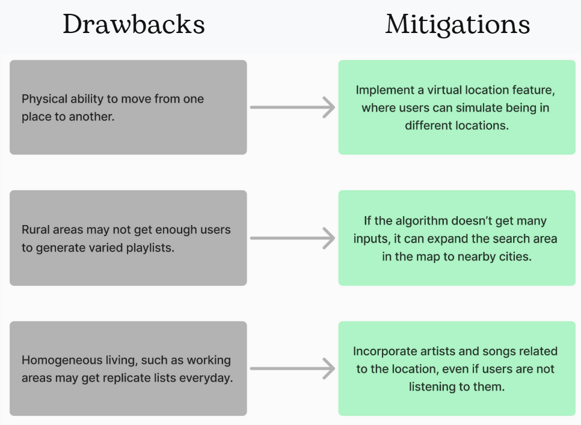

BACKGROUND
In September 2024, as part of the UX Design & Evaluation course, we were introduced to a design challenge by a UX Researcher from Spotify. This challenge was an opportunity to apply and showcase our design skills by addressing the following:
"How might Spotify better serve music discovery behaviors using AI on new or existing surfaces, leveraging both implicit and explicit signals?"
This project allowed us to explore innovative solutions for improving user experiences in music discovery through the integration of AI.
ITEM
Graduate project
TOOLS
Figma
TEAM
4 people
PERIOD
2 weeks
DESIGN PROCESS
This design process was supported by emotion research and user feedback.
1- DISCOVERY
Exploring existing music discovery features in Spotify:

Common Features:
- Personalized music experience based on users’ preferences or behavior.
- Most of these evolve over time, adapting to the users' taste, context, or changing preferences.
Opportunities for Improvement:
- Allow users to discover music based on what others are listening to.
- Consider environmental factors (location & events) for music recommendations.
- Exploration beyond the habits.
2- PROBLEM DEFINITION
"How might we use geographical location as an explicit signal to improve AI driven music discovery?"
"How might we use location and other users in that location to generate a unique playlist that the user can listen to while in that area?"

3- IDEATION
Goal: To use generative AI to suggest music for locations based on the music listened to by people >who frequent those locations and provide balanced listening experiences to users.
Defining explicit and implicit signals
- Set up object: What effect does daily use of AI chatbots have on the emotional feelings of users?
- Refine learning process: What are the most effective communication strategies to boost competitiveness for job interviews?
- Impact result: How can users develop their confidence to shape who they are after using AI Mock Interview?
AI and Algorithm Design:
4- PROTOTYPING
5- DRAWBACKS & MITIGATIONS
6- REFLECTIONS
Persona Takeaways
- Gained a deeper understanding of explicit and implicit signals and their application in UX design.
- Learned the importance of considering multiple user perspectives to create more inclusive, user-friendly solutions.
- Developed a broader approach to design by observing diverse interactions with Spotify, which helped shape a more holistic solution.